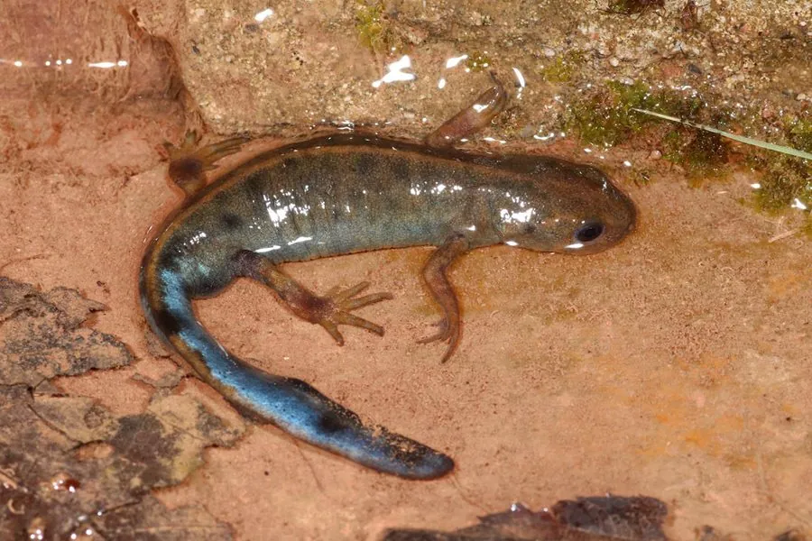

两栖动物 · 动物界
蓝尾蝾螈 Cynops cyanurus

中国贵州、云南一带的小型蝾螈，繁殖期雄螈尾部呈现鲜艳的蓝色，栖息于山间水塘和稻田，属观赏性物种。
- 分类
- 门脊索动物门纲两栖纲目有尾目科蝾螈科属蝾螈属
- 栖息环境
- 山间水塘、稻田、水沟和缓流溪涧
- 地理分布
- 中国贵州、云南等地
- 保护级别
- IUCN 暂无评估；中国“三有”保护动物
物种志
蓝尾蝾螈体长 8–12 厘米，头部扁平，吻端钝圆，皮肤光滑；背面呈黑褐色或暗棕色，腹面橙红色并带黑色斑点，繁殖期雄螈的尾部会呈现鲜艳的蓝色，与橙红色腹部形成强烈对比。四肢纤细，尾侧扁，适合在水中游动。
它分布于中国贵州、云南等地的山间水塘、稻田、水沟和缓流溪涧，成体以水生生活为主，夜间捕食水生昆虫、螺类、小虾和蠕虫。繁殖期在 3–6 月，雄螈在水草间求偶，雌螈把卵逐粒粘在水草叶片上，卵约 2–3 周孵化，幼体有外鳃。蓝尾蝾螈的皮肤腺体能分泌刺激性毒素，接触后需洗手；它因体色美丽常被捕捉观赏，野外种群需要关注，中国将其列入“三有”名录。
形态与习性
- 食性水生昆虫、螺类、小虾和蠕虫
- 体长约 8–12 cm
- 繁殖3–6 月产卵，卵粘于水草，约 2–3 周孵化
- 体色繁殖期雄螈尾部呈鲜艳蓝色
- 活动节律夜行性，白天藏在水草或石缝中
- 毒性皮肤分泌刺激性毒素，接触后需洗手
趣味知识
- 只有繁殖期的雄螈尾部会变成鲜艳的蓝色，是求偶信号。
- 蓝尾蝾螈橙红色的腹部是警戒色，提醒天敌自己有毒。
- 它的卵一粒粒粘在水草叶片上，孵化后幼体带着外鳃生活。